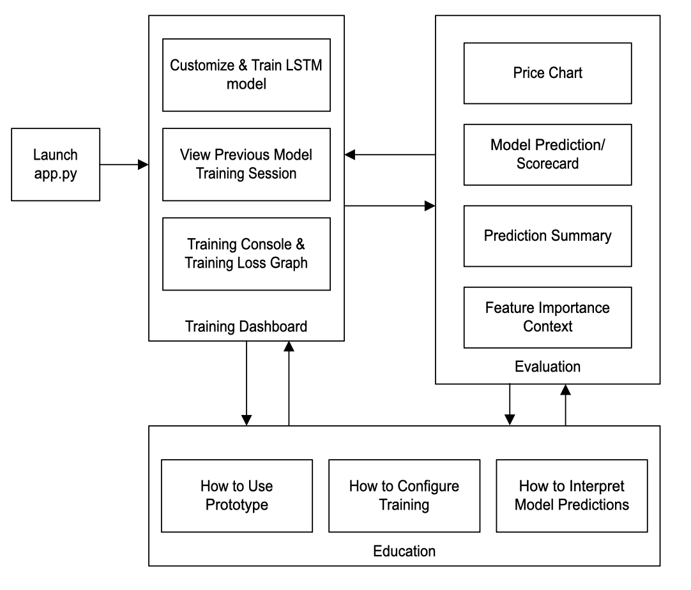
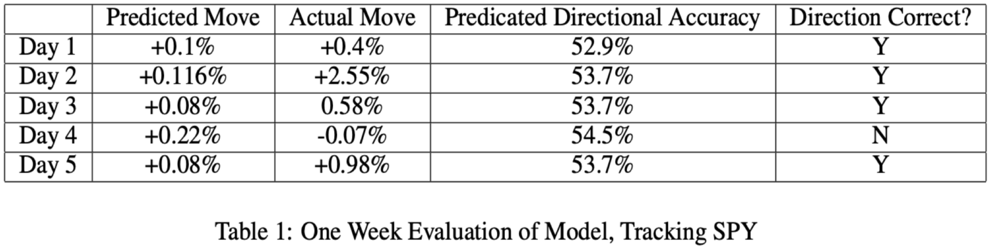
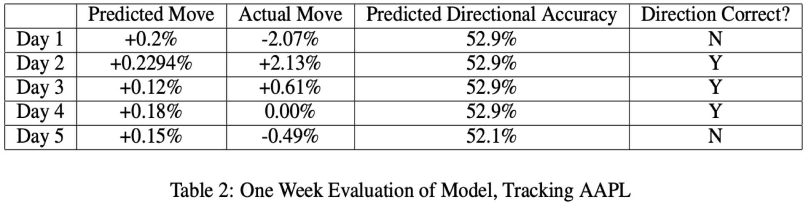

Education Platform | AI Forecasting Prototype
Equity Education
Equity Education is a Track 2 prototype designed to help beginner traders interpret market behavior using an educational interface that combines model predictions with supporting chart context.
The system pairs an LSTM-based forecasting pipeline with a Python GUI to display predictions, technical indicators, and training behavior in a format that is easier to explore than raw market data alone.
Overview
The project addresses a practical problem for novice users: technical indicators are widely available, but often difficult to interpret without experience. Equity Education turns those signals into a guided workflow that connects predictions to readable visual context.
Instead of treating forecasting as an isolated model output, the system is built as an instructional interface where training progress, market context, and prediction behavior are visible together.
Approach & Takeaways
The workflow combines configurable LSTM training, feature engineering, and evaluation views in a Tkinter GUI. Users can choose training setups, run experiments, and compare predicted movement against historical price behavior and indicators.
Reported results show stable, interpretable predictions with directional performance in the low-to-mid 50% range, reinforcing the prototype’s strength as an educational tool rather than a standalone trading engine.
System & Evaluation
Prototype architecture, workflow context, and one-week directional evaluation snapshots.

One-Week Directional Results
- SPY Evaluation Directionally correct on 4 of 5 days, with predicted directional accuracy values in the low-to-mid 50% range.
- AAPL Evaluation Directionally correct on 3 of 5 days, highlighting more difficulty adapting to faster single-stock movement.
- Interpretation The prototype was most effective as an interpretive, educational decision-support tool rather than a high-confidence forecasting engine.
SPY One-Week Evaluation

AAPL One-Week Evaluation
